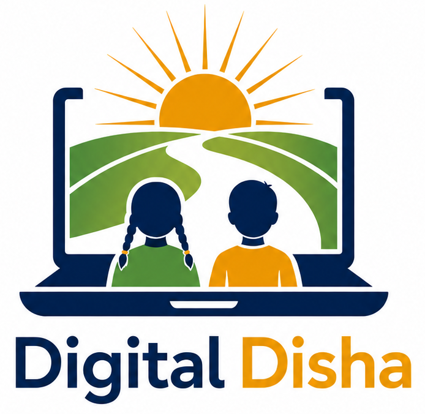

The laptop
The laptop represents access to digital learning, practical computer skills, and the tools students need to participate confidently in a technology-driven world.
The road
The road represents “Disha,” meaning direction. It shows a path forward, especially for students in places where digital opportunities can feel far away.
The sunrise
The sunrise stands for opportunity, new beginnings, and the confidence that grows when students are encouraged to explore technology.
The fields and students
The fields reflect rural India, while the two students represent the children Digital Disha is built for: curious, capable, and ready to learn.
